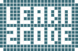

Ahoj svet!
Rails Girls comes to Bratislava! During the free two-day workshop we'll dive into the magical world of Ruby on Rails.
Apply now! Applications are open until the Wednesday 21st of August 2013.
You learn designing, prototyping and coding with the help from our coaches.
You need your own laptop, curiosity and a sprinkle of imagination!
Want to help? We are looking for volunteers and Rails coaches. Email us.
| 18.00 - |
Installation partyGet know the attendees a little bit before hand. Bring your laptop if you can, so we can install Ruby on Rails for you (or follow this install guide). If you had troubles we will gladly get your computer ready to go during this time.Where: Univerzitný technologický inkubátor STU, Pionierska 15, 831 02 Bratislava
|
|---|---|
| 21.00 - |
Coach dinnerAll of the coaches are welcome to our coach dinner, where we'll go through the program for the next day. |
| 9:00 - 10:00 |
Registration, coffee and installation festDuring the morning we’ll install Ruby on Rails on your computer. |
|---|---|
| 10:00 - 10:15 |
WelcomeOutline of the day & word from sponsors |
| 10:15 - 10:45 |
Lightning talks from coachesCoaches will give a few quick talks on their experiences in coding and you get a chance to ask questions. |
| 11:00 - 11:30 |
Understanding Web AppsLet's get coding! Introduction to basic concept of web programming: variables, methods, classes. What we’ll lear and how it all fits together. |
| 11:30 - 13:00 |
WORKSHOPJumpstart your first web application, coaches will help you get started. |
| 13:00 - 14:00 | Lunch |
| 14.00- 16:00 |
WORKSHOPSome serious app building will happen here! |
| 16:00 - 16:30 |
Coffee and CakeGet back together in one group and talk with your coaches and peers about how awesome your first web applications are. |
| 16:30 - 18:30 |
WORKSHOPExtend your application. |
| 20:00 - |
Afterparty!Open for everyone, meet cool people interested in tech. |
Applications close: Wednesday 21st of August
Acceptances informed: Friday 23rd of August
Rails Girls Bratislava is co-organized with our awesome partners.
Want to help? We're looking for partners & sponsors for the non-profit event! Email us!
 Learn2Code je intenzívny 3-mesačný vzdelávací program zameraný na tvorbu webových aplikácií s použitím najmodernejších technológií (HTML, CSS, jQuery a Ruby on Rails).
 Websupport je najväčší slovenský webhosting, ktorý okrem hostingových produktov ponúka skvelé bonusy, veľmi ochotný a priateľský helpdesk a podporu.
Websupport je najväčší slovenský webhosting, ktorý okrem hostingových produktov ponúka skvelé bonusy, veľmi ochotný a priateľský helpdesk a podporu.
How much does the workshop cost? Nothing, it's free! You just need to be excited!
Who is this aimed for? Women of any age with basic knowledge of working with a computer. We’ve had people of all ages taking part. Most of the speeches are given in english, but small group work is done in german. Please bring your laptop.
Can men attend? Yes, but you need to be accompanied by an interested lady. Also, girls are given a priority.
I know how to program - How can I help? We’re also looking for people to be coaches. We’ll have a two-three hour workshop before the event to walk you through the curriculum. Email us
 Marian Kristel
@maioxsk
Marian Kristel
@maioxsk
 Milada Horovska
@
Milada Horovska
@